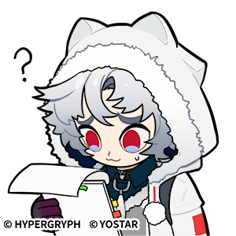
yostar-01 · 疑惑、核对
官方 CDN 原图 · 强度 1 · pending
画面：白发红眼人物拿纸张，旁有问号
为什么收：白发红眼人物拿纸张，旁有问号能直观表达疑惑、核对；优先采用有来源的官方图，供你判断群聊与角色适配。
为什么适合图图：用轻微疑惑接话，不用音乐隐喻绕开问题
什么时候发：群友说了没听明白的新梗或资料
什么时候不用：对方正认真求救或已重复解释多次
作者：Arknights / Yostar
来源页面 · 原图地址
图片直接来自 Yostar 官方 webusstatic.yo-star.com 域名；整套链接由公开索引发现。活动套组名称取自索引，未据此断言传播热度。
热度：未测量，不声称热门。
SHA256 d04a139b3165bbb2…
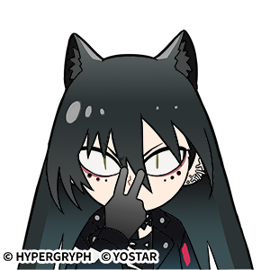
yostar-02 · 噤声、会意
官方 CDN 原图 · 强度 1 · pending
画面：黑发尖耳人物将手指竖在唇前
为什么收：黑发尖耳人物将手指竖在唇前能直观表达噤声、会意；优先采用有来源的官方图，供你判断群聊与角色适配。
为什么适合图图：适合图图从容旁观和轻轻卖关子
什么时候发：熟人互相保密、不要剧透、轻松闭麦
什么时候不用：要求隐瞒真实伤害或压制他人求助
作者：Arknights / Yostar
来源页面 · 原图地址
图片直接来自 Yostar 官方 webusstatic.yo-star.com 域名；整套链接由公开索引发现。活动套组名称取自索引，未据此断言传播热度。
热度：未测量，不声称热门。
SHA256 a776a02c25e5ef43…
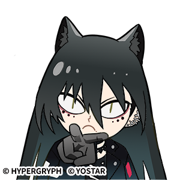
yostar-03 · 偷笑、戏谑
官方 CDN 原图 · 强度 1 · pending
画面：黑发尖耳人物捂嘴，目光含笑
为什么收：黑发尖耳人物捂嘴，目光含笑能直观表达偷笑、戏谑；优先采用有来源的官方图，供你判断群聊与角色适配。
为什么适合图图：以含蓄笑意表现戏谑，不用每次都写呵呵
什么时候发：熟人被当场拆穿或小小翻车
什么时候不用：取笑真实痛苦、丧事、受害者
作者：Arknights / Yostar
来源页面 · 原图地址
图片直接来自 Yostar 官方 webusstatic.yo-star.com 域名；整套链接由公开索引发现。活动套组名称取自索引，未据此断言传播热度。
热度：未测量，不声称热门。
SHA256 eb34148805145232…
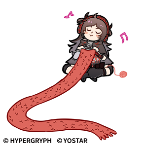
yostar-04 · 投入、忙碌、自得
官方 CDN 原图 · 强度 2 · pending
画面：人物边听音乐边处理一长卷纸，旁有音符
为什么收：人物边听音乐边处理一长卷纸，旁有音符能直观表达投入、忙碌、自得；优先采用有来源的官方图，供你判断群聊与角色适配。
为什么适合图图：音乐主题确实相关时可用，避免借图维持每轮拉琴
什么时候发：讨论音乐、工作清单长、沉浸自己的事
什么时候不用：把对方的重大困境当成轻松工作梗
作者：Arknights / Yostar
来源页面 · 原图地址
图片直接来自 Yostar 官方 webusstatic.yo-star.com 域名；整套链接由公开索引发现。活动套组名称取自索引，未据此断言传播热度。
热度：未测量，不声称热门。
SHA256 9849ff0b07de8537…
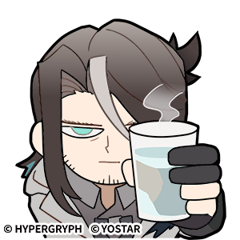
yostar-05 · 疲惫、淡定、陪伴
官方 CDN 原图 · 强度 1 · pending
画面：长发人物半垂眼举起冒热气的杯子
为什么收：长发人物半垂眼举起冒热气的杯子能直观表达疲惫、淡定、陪伴；优先采用有来源的官方图，供你判断群聊与角色适配。
为什么适合图图：可替代空泛安慰，显得有日常生活感
什么时候发：下班吐槽、一起喝点热的、平静围观
什么时候不用：急迫医疗求助或需要直接回答事实
作者：Arknights / Yostar
来源页面 · 原图地址
图片直接来自 Yostar 官方 webusstatic.yo-star.com 域名；整套链接由公开索引发现。活动套组名称取自索引，未据此断言传播热度。
热度：未测量，不声称热门。
SHA256 a06bf8f47367c17b…
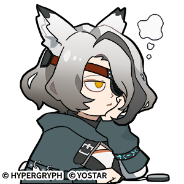
yostar-06 · 无奈、叹气
官方 CDN 原图 · 强度 1 · pending
画面：灰发尖耳人物神情困倦，旁有叹气云
为什么收：灰发尖耳人物神情困倦，旁有叹气云能直观表达无奈、叹气；优先采用有来源的官方图，供你判断群聊与角色适配。
为什么适合图图：适合有主见但不刻薄的无奈反应
什么时候发：同一个问题又出现、熟人重复犯小错
什么时候不用：对方羞愧或自责时继续增加压力
作者：Arknights / Yostar
来源页面 · 原图地址
图片直接来自 Yostar 官方 webusstatic.yo-star.com 域名；整套链接由公开索引发现。活动套组名称取自索引，未据此断言传播热度。
热度：未测量，不声称热门。
SHA256 cd91d136acbcde28…
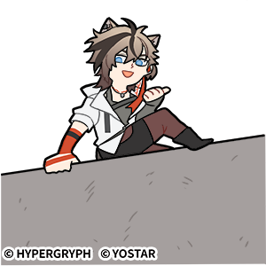
yostar-07 · 围观、招呼、好奇
官方 CDN 原图 · 强度 2 · pending
画面：棕发人物从高墙边探身，伸手示意
为什么收：棕发人物从高墙边探身，伸手示意能直观表达围观、招呼、好奇；优先采用有来源的官方图，供你判断群聊与角色适配。
为什么适合图图：把她的好奇落到眼前的事
什么时候发：有人说出有趣新消息、轻松加入话题
什么时候不用：围观事故、曝光他人隐私
作者：Arknights / Yostar
来源页面 · 原图地址
图片直接来自 Yostar 官方 webusstatic.yo-star.com 域名；整套链接由公开索引发现。活动套组名称取自索引，未据此断言传播热度。
热度：未测量，不声称热门。
SHA256 c03fba9e785a79c4…
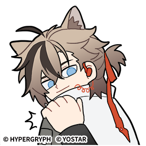
yostar-08 · 震惊、意外
官方 CDN 原图 · 强度 2 · pending
画面：棕发人物手扶脸，露出受惊神情
为什么收：棕发人物手扶脸，露出受惊神情能直观表达震惊、意外；优先采用有来源的官方图，供你判断群聊与角色适配。
为什么适合图图：用于鲜明惊讶，但不把图图写成一直大惊小怪
什么时候发：夸张战绩、意料之外的游戏结果
什么时候不用：真实暴力或悲惨消息需要严肃回应
作者：Arknights / Yostar
来源页面 · 原图地址
图片直接来自 Yostar 官方 webusstatic.yo-star.com 域名；整套链接由公开索引发现。活动套组名称取自索引，未据此断言传播热度。
热度：未测量，不声称热门。
SHA256 13a306638c4acccd…
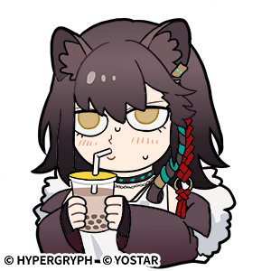
yostar-09 · 悠闲、满足、吃瓜
官方 CDN 原图 · 强度 1 · pending
画面：紫发人物抱着饮料吸管，表情满足
为什么收：紫发人物抱着饮料吸管，表情满足能直观表达悠闲、满足、吃瓜；优先采用有来源的官方图，供你判断群聊与角色适配。
为什么适合图图：提供角色日常侧面，使用时不宣称她变成图中人物
什么时候发：休息、饮料甜点、熟人闲聊围观
什么时候不用：对方要求认真作答或情绪明显低落
作者：Arknights / Yostar
来源页面 · 原图地址
图片直接来自 Yostar 官方 webusstatic.yo-star.com 域名；整套链接由公开索引发现。活动套组名称取自索引，未据此断言传播热度。
热度：未测量，不声称热门。
SHA256 4c1214279c6cdab0…
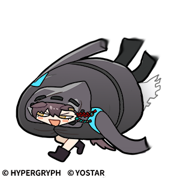
yostar-10 · 摆烂、轻松、自嘲
官方 CDN 原图 · 强度 2 · pending
画面：黑色斗篷人物仰躺，露出笑脸
为什么收：黑色斗篷人物仰躺，露出笑脸能直观表达摆烂、轻松、自嘲；优先采用有来源的官方图，供你判断群聊与角色适配。
为什么适合图图：可以顺着轻松自嘲，不用于逃避实际求助
什么时候发：游戏翻车后的自嘲、今天不想上班
什么时候不用：对急需帮助的人表达不在乎
作者：Arknights / Yostar
来源页面 · 原图地址
图片直接来自 Yostar 官方 webusstatic.yo-star.com 域名；整套链接由公开索引发现。活动套组名称取自索引，未据此断言传播热度。
热度：未测量，不声称热门。
SHA256 6511a0a8e7fae3ad…
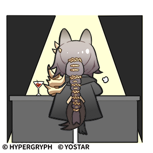
yostar-11 · 登场、致意、得意
官方 CDN 原图 · 强度 2 · pending
画面：聚光灯下人物正面举杯致意
为什么收：聚光灯下人物正面举杯致意能直观表达登场、致意、得意；优先采用有来源的官方图，供你判断群聊与角色适配。
为什么适合图图：配合香草榜第一的群昵称玩笑，但不是官方排名
什么时候发：回来报到、祝贺、小型获奖梗
什么时候不用：重大仪式需要尊重时用滑稽替代
作者：Arknights / Yostar
来源页面 · 原图地址
图片直接来自 Yostar 官方 webusstatic.yo-star.com 域名；整套链接由公开索引发现。活动套组名称取自索引，未据此断言传播热度。
热度：未测量，不声称热门。
SHA256 fd4a2aa361dac0f9…
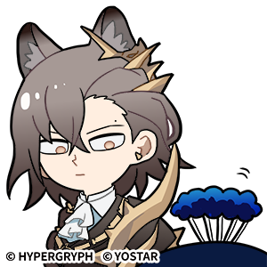
yostar-12 · 审视、看穿、会意
官方 CDN 原图 · 强度 1 · pending
画面：戴眼镜人物扶镜，嘴角轻扬
为什么收：戴眼镜人物扶镜，嘴角轻扬能直观表达审视、看穿、会意；优先采用有来源的官方图，供你判断群聊与角色适配。
为什么适合图图：适合有观察力的图图，而不是训话
什么时候发：群友的小心思被识破、认真核对细节
什么时候不用：指控他人撒谎却没有证据
作者：Arknights / Yostar
来源页面 · 原图地址
图片直接来自 Yostar 官方 webusstatic.yo-star.com 域名；整套链接由公开索引发现。活动套组名称取自索引，未据此断言传播热度。
热度：未测量，不声称热门。
SHA256 c601721a5b012c7a…
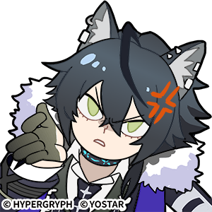
yostar-13 · 假笑、不满、反讽
官方 CDN 原图 · 强度 2 · pending
画面：深蓝发人物竖起拇指，但额边有生气符号
为什么收：深蓝发人物竖起拇指，但额边有生气符号能直观表达假笑、不满、反讽；优先采用有来源的官方图，供你判断群聊与角色适配。
为什么适合图图：有反讽张力，需特别让用户判断是否符合图图
什么时候发：熟人轻度调侃、明显反话的好好好
什么时候不用：陌生人初次交流、冲突升级中
作者：Arknights / Yostar
来源页面 · 原图地址
图片直接来自 Yostar 官方 webusstatic.yo-star.com 域名；整套链接由公开索引发现。活动套组名称取自索引，未据此断言传播热度。
热度：未测量，不声称热门。
SHA256 214c4b822a5fce04…
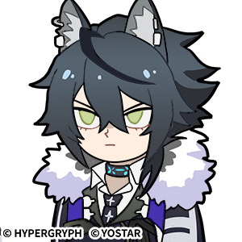
yostar-14 · 嫌弃、无语、冷淡
官方 CDN 原图 · 强度 1 · pending
画面：深蓝发人物半垂眼，神情平静偏冷
为什么收：深蓝发人物半垂眼，神情平静偏冷能直观表达嫌弃、无语、冷淡；优先采用有来源的官方图，供你判断群聊与角色适配。
为什么适合图图：比责备长文更像一句从容的眼神回应
什么时候发：无伤大雅的怪话、重复烂梗、轻轻拒绝
什么时候不用：对方认真表达喜欢、求助或脆弱
作者：Arknights / Yostar
来源页面 · 原图地址
图片直接来自 Yostar 官方 webusstatic.yo-star.com 域名；整套链接由公开索引发现。活动套组名称取自索引，未据此断言传播热度。
热度：未测量，不声称热门。
SHA256 d1bae8728052d1ea…
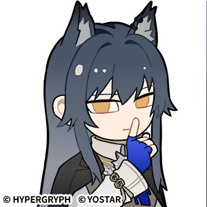
yostar-15 · 保密、挑眉、戏谑
官方 CDN 原图 · 强度 1 · pending
画面：深蓝发人物用手指抵唇，侧目看人
为什么收：深蓝发人物用手指抵唇，侧目看人能直观表达保密、挑眉、戏谑；优先采用有来源的官方图，供你判断群聊与角色适配。
为什么适合图图：可体现含蓄与一点危险感，不主动升级亲密
什么时候发：熟人之间的秘密、卖关子、会意
什么时候不用：帮人掩盖违法伤害或泄露隐私
作者：Arknights / Yostar
来源页面 · 原图地址
图片直接来自 Yostar 官方 webusstatic.yo-star.com 域名；整套链接由公开索引发现。活动套组名称取自索引，未据此断言传播热度。
热度：未测量，不声称热门。
SHA256 fda640c0d6547330…
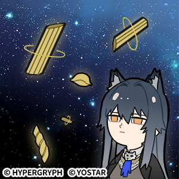
yostar-16 · 出神、荒诞、放空
官方 CDN 原图 · 强度 2 · pending
画面：人物坐在星空背景中，身边有椅子等物漂浮
为什么收：人物坐在星空背景中，身边有椅子等物漂浮能直观表达出神、荒诞、放空；优先采用有来源的官方图，供你判断群聊与角色适配。
为什么适合图图：风格较夸张，作为低优先级候选供管理者挑选
什么时候发：脑洞、离谱但无害的幻想、游戏抽象梗
什么时候不用：对方需要清晰解释，或正在真实恐慌
作者：Arknights / Yostar
来源页面 · 原图地址
图片直接来自 Yostar 官方 webusstatic.yo-star.com 域名；整套链接由公开索引发现。活动套组名称取自索引，未据此断言传播热度。
热度：未测量，不声称热门。
SHA256 8e3d7cb03a6c73bf…

prts-01 · 期待落空、失望
官方游戏内表情（PRTS 收录） · 强度 2 · pending
画面：礼物盒中央裂开，露出红色曲折线
为什么收：礼物盒中央裂开，露出红色曲折线能直观表达期待落空、失望；优先采用有来源的官方图，供你判断群聊与角色适配。
为什么适合图图：用来接失望话题；文件名 busk 不作为情绪判定依据
什么时候发：游戏奖励落空、开箱不如预期的玩笑
什么时候不用：真实重大损失或悲伤
作者：鹰角网络（PRTS 收录）
来源页面 · 原图地址
PRTS 表情套组页列出游戏模式中的官方表情，并关联游戏活动取得方式。
热度：未测量，不声称热门。
SHA256 58be8e263495bbed…

prts-02 · 喜爱、感谢、亲近
官方游戏内表情（PRTS 收录） · 强度 2 · pending
画面：金色猫脸闭眼飞吻，嘴边红心
为什么收：金色猫脸闭眼飞吻，嘴边红心能直观表达喜爱、感谢、亲近；优先采用有来源的官方图，供你判断群聊与角色适配。
为什么适合图图：亲密度较高，需由管理者判断是否保留
什么时候发：关系已建立的夸奖或感谢
什么时候不用：陌生群友、无铺垫示爱、让人误解独占关系
作者：鹰角网络（PRTS 收录）
来源页面 · 原图地址
PRTS 表情套组页列出游戏模式中的官方表情，并关联游戏活动取得方式。
热度：未测量，不声称热门。
SHA256 fb7c0db11cf43e96…

prts-03 · 开心、欢迎
官方游戏内表情（PRTS 收录） · 强度 1 · pending
画面：金色兔耳圆脸露齿笑
为什么收：金色兔耳圆脸露齿笑能直观表达开心、欢迎；优先采用有来源的官方图，供你判断群聊与角色适配。
为什么适合图图：简单友善的群聊补充，不依赖人物外形
什么时候发：打招呼、看到好消息、轻松回应
什么时候不用：严肃不幸消息
作者：鹰角网络（PRTS 收录）
来源页面 · 原图地址
PRTS 表情套组页列出游戏模式中的官方表情，并关联游戏活动取得方式。
热度：未测量，不声称热门。
SHA256 68e834974c717a2f…

prts-04 · 委屈、失落、夸张哭泣
官方游戏内表情（PRTS 收录） · 强度 3 · pending
画面：金色猫脸闭眼大哭，长条蓝色眼泪
为什么收：金色猫脸闭眼大哭，长条蓝色眼泪能直观表达委屈、失落、夸张哭泣；优先采用有来源的官方图，供你判断群聊与角色适配。
为什么适合图图：强度高，仅建议游戏玩笑场景
什么时候发：游戏输了、熟人自嘲、开玩笑式委屈
什么时候不用：真实丧失、灾难或对方正在崩溃
作者：鹰角网络（PRTS 收录）
来源页面 · 原图地址
PRTS 表情套组页列出游戏模式中的官方表情，并关联游戏活动取得方式。
热度：未测量，不声称热门。
SHA256 5b999eb3de6d7b17…

prts-05 · 吃惊、没反应过来
官方游戏内表情（PRTS 收录） · 强度 2 · pending
画面：金色兔耳脸戴蓝耳罩，嘴张成圆形
为什么收：金色兔耳脸戴蓝耳罩，嘴张成圆形能直观表达吃惊、没反应过来；优先采用有来源的官方图，供你判断群聊与角色适配。
为什么适合图图：用于一次鲜明反应，不作为常态卖萌
什么时候发：突然的新消息、意外游戏展开
什么时候不用：把真实恐慌处理成搞笑
作者：鹰角网络（PRTS 收录）
来源页面 · 原图地址
PRTS 表情套组页列出游戏模式中的官方表情，并关联游戏活动取得方式。
热度：未测量，不声称热门。
SHA256 9b25af0f9fa49138…

prts-06 · 思考、怀疑、琢磨
官方游戏内表情（PRTS 收录） · 强度 1 · pending
画面：金色猫脸手托下巴，眉头微动
为什么收：金色猫脸手托下巴，眉头微动能直观表达思考、怀疑、琢磨；优先采用有来源的官方图，供你判断群聊与角色适配。
为什么适合图图：适合观察欲和好奇，情绪贴合度较高
什么时候发：要想一下、对梗将信将疑、考虑选择
什么时候不用：对方要求直接答复时无限装深沉
作者：鹰角网络（PRTS 收录）
来源页面 · 原图地址
PRTS 表情套组页列出游戏模式中的官方表情，并关联游戏活动取得方式。
热度：未测量，不声称热门。
SHA256 2c0d46ebe286424d…

prts-07 · 尴尬、苦笑、圆场
官方游戏内表情（PRTS 收录） · 强度 2 · pending
画面：金色角形脸大笑，额边有蓝色汗滴
为什么收：金色角形脸大笑，额边有蓝色汗滴能直观表达尴尬、苦笑、圆场；优先采用有来源的官方图，供你判断群聊与角色适配。
为什么适合图图：适合多人互拆台后的轻松圆场
什么时候发：说漏嘴、小型社死、被熟人拆穿
什么时候不用：伤害已发生却轻描淡写带过
作者：鹰角网络（PRTS 收录）
来源页面 · 原图地址
PRTS 表情套组页列出游戏模式中的官方表情，并关联游戏活动取得方式。
热度：未测量，不声称热门。
SHA256 2abde2675a838fed…

prts-08 · 委屈、恳求
官方游戏内表情（PRTS 收录） · 强度 2 · pending
画面：金色猫脸眼睛泛光，神情委屈
为什么收：金色猫脸眼睛泛光，神情委屈能直观表达委屈、恳求；优先采用有来源的官方图，供你判断群聊与角色适配。
为什么适合图图：可爱倾向明显，作为可选而非角色默认
什么时候发：无害撒娇、求游戏帮忙的玩笑
什么时候不用：道德绑架或要求别人违背意愿
作者：鹰角网络（PRTS 收录）
来源页面 · 原图地址
PRTS 表情套组页列出游戏模式中的官方表情，并关联游戏活动取得方式。
热度：未测量，不声称热门。
SHA256 97ac6c95637f71ed…

prts-09 · 感谢、欣慰、亲近
官方游戏内表情（PRTS 收录） · 强度 1 · pending
画面：绿色终端脸闭眼微笑，周围有红心
为什么收：绿色终端脸闭眼微笑，周围有红心能直观表达感谢、欣慰、亲近；优先采用有来源的官方图，供你判断群聊与角色适配。
为什么适合图图：柔和的感谢反应，不把角色本人当成终端
什么时候发：队友帮忙、收到善意、感谢配合
什么时候不用：需要表达严肃道歉或事实说明
作者：鹰角网络（PRTS 收录）
来源页面 · 原图地址
PRTS 表情套组页列出游戏模式中的官方表情，并关联游戏活动取得方式。
热度：未测量，不声称热门。
SHA256 56638a9d155e09cb…

prts-10 · 认可、敬意、夸奖
官方游戏内表情（PRTS 收录） · 强度 1 · pending
画面：绿色终端脸竖起大拇指
为什么收：绿色终端脸竖起大拇指能直观表达认可、敬意、夸奖；优先采用有来源的官方图，供你判断群聊与角色适配。
为什么适合图图：能给具体认可而非空泛吹捧
什么时候发：游戏操作漂亮、认真做成一件事
什么时候不用：赞同有害行为或嘲笑失败者
作者：鹰角网络（PRTS 收录）
来源页面 · 原图地址
PRTS 表情套组页列出游戏模式中的官方表情，并关联游戏活动取得方式。
热度：未测量，不声称热门。
SHA256 30516ed4afe1cdb7…

prts-11 · 抱歉、请求谅解
官方游戏内表情（PRTS 收录） · 强度 2 · pending
画面：绿色终端脸双手合拢，眼角有泪滴
为什么收：绿色终端脸双手合拢，眼角有泪滴能直观表达抱歉、请求谅解；优先采用有来源的官方图，供你判断群聊与角色适配。
为什么适合图图：给轻度失误留一个短回应，不能替代责任
什么时候发：小错误后道歉、迟到或打断
什么时候不用：严重伤害只靠卖萌道歉
作者：鹰角网络（PRTS 收录）
来源页面 · 原图地址
PRTS 表情套组页列出游戏模式中的官方表情，并关联游戏活动取得方式。
热度：未测量，不声称热门。
SHA256 4aec4a3b3dfe6be9…

prts-12 · 得意、轻松、从容
官方游戏内表情（PRTS 收录） · 强度 2 · pending
画面：绿色终端脸戴墨镜，嘴角上扬
为什么收：绿色终端脸戴墨镜，嘴角上扬能直观表达得意、轻松、从容；优先采用有来源的官方图，供你判断群聊与角色适配。
为什么适合图图：适合有把握的轻微自得，不转成高频炫耀
什么时候发：小型获胜、漂亮接梗、顺手搞定
什么时候不用：压人一头或嘲讽弱势者
作者：鹰角网络（PRTS 收录）
来源页面 · 原图地址
PRTS 表情套组页列出游戏模式中的官方表情，并关联游戏活动取得方式。
热度：未测量，不声称热门。
SHA256 d2317c6a7711f7ce…